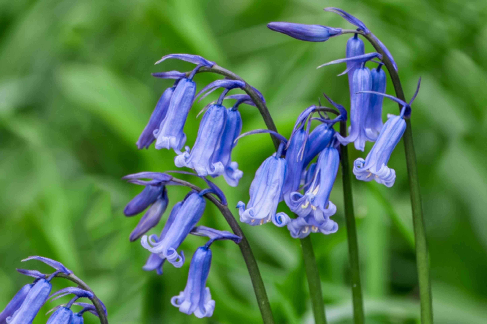
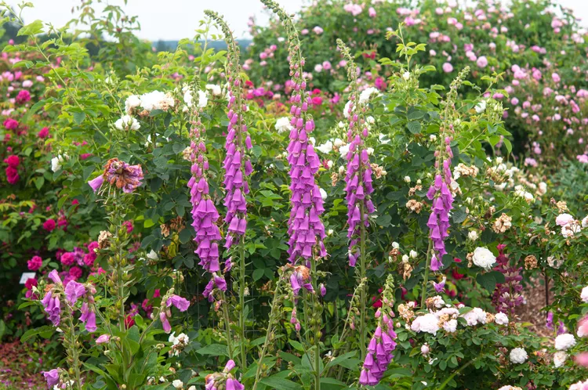
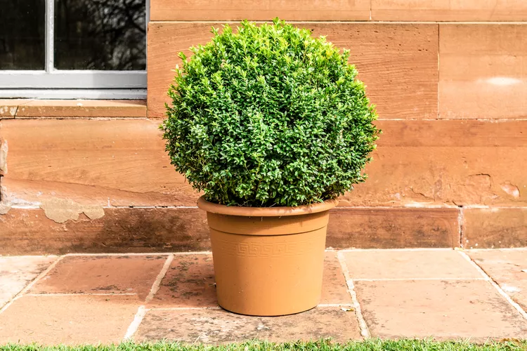
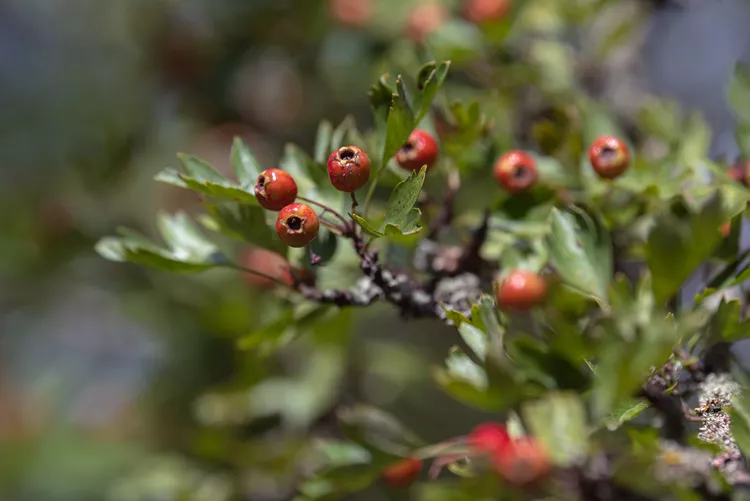
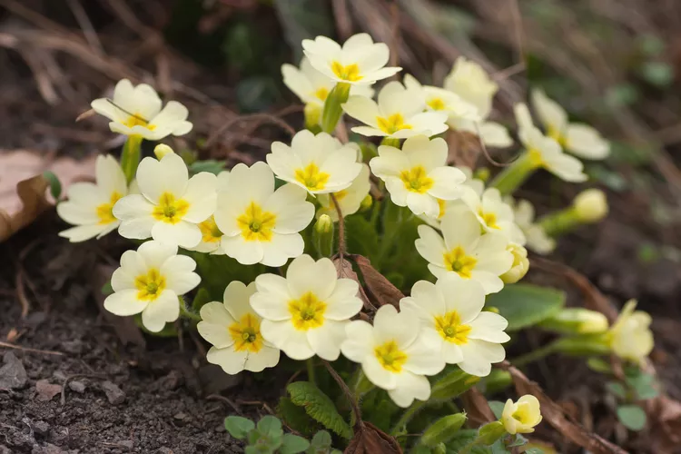

Bluebells
The enchanting bluebells are a common sight in Whisper Bay during spring. These beautiful flowers create a stunning carpet of blue across the woodland floors, attracting numerous visitors.
The English bluebell (Hyacinthoides non-scripta) is a perennial wildflower bulb. It is native to the British Isles and widespread throughout Europe and North America.
English bluebells are a sign that spring is in full swing. Their deep blue-violet blooms appear in mid to late spring and put on a fragrant show for up to five weeks before going dormant by early summer. The trumpet-shaped blooms have up-turned lips, which droop atop clumps that are about 12 to 18 inches tall and three to eight inches wide. Each flower grows six petals and produces creamy white pollen. English bluebells make good cut flowers.
The bulbs naturalize, vigorously carpeting any partially shaded areas such as woodland gardens where mature trees provide dappled shade. They can also be planted as a groundcover beneath trees, shrubs, and rosebushes.
Plant English bluebell bulbs in the late summer.
All parts of the plant, especially the bulb, are toxic to humans and toxic to pets
Bluebells Care
English bluebells are easy to grow and care for, and they multiply plentifully each year. Once they are established, just sit back and enjoy the delightful show every spring for years to come.
When planting them, work two to four inches of organic matter into the soil, using a garden rake or hoe to loosen and mix the soil thoroughly. Remove any weeds. Use a trowel to dig a hole about four inches deep, or twice as deep as the bulb's length. Set the bulb vertically, with the pointed end facing upwards. When planting groups of five or more, space them three to six inches apart. Cover each bulb with soil and tamp down the top of the soil to eliminate air gaps.
Light
English bluebells need plenty of light in the early spring but then prefer partial shade during the summer. These light requirement make them ideal for planting beneath deciduous trees.
Soil
Bluebells thrive in soil that is moist, well-drained, and moderately fertile. Overall, they adapt to all soil types. They prefer slightly-acidic to slightly-alkaline pH levels.
Water
English bluebells require ample moisture during their growth period in the winter (in warmer climates) and spring. Water bulbs well after planting. To keep the soil moist, water whenever the top two to four inches of soil feels dry. When growth appears, water only lightly, as overwatering may cause bulb rot. After flowering, continue to provide water until the foliage dies back. When watered well for the first couple of seasons, English bluebells multiply quickly.
Fertilizer
As new shoots appear in the spring, sprinkle a bulb fertilizer or a granular, slow-release fertilizer that is higher in phosphorus and lower in nitrogen, around the plants. This encourages healthy root growth and plenty of flowers. Feed the plants once again at the end of their bloom cycle, once the leaves begin to yellow and die. This helps the bulbs replenish their stores of nutrients for the next year's batch of flowers.
Temperature and Humidity
Bluebells require temperate climate with cool to cold winters and moderately warm summers with cool shade. They are not suitable for hot, dry climates.
Back to topFoxgloves
The tall and striking foxgloves add vibrant shades of purple and pink to the landscape. They are particularly prominent in hedgerows and woodlands, blooming in the summer months.
Within the Digitalis genus, there are several biennial, perennial, and shrub species that all carry the common name foxglove, but the one most popular as a garden plant is the common foxglove—Digitalis purpurea. Common foxglove is a uniquely eye-catching plant, a tall, slender specimen with tubular blooms, often with colorful speckles. It is a fast-growing plant that generally flowers in its second season before dying. In its first year, the plant produces only a basal clump of foliage, but in its second year, the plant sends forth 2- to 5-foot tall stalks lined with beautiful funnel-shaped pink, white, or purple flowers with white or purple spots lining the throats.
Many gardeners purchase common foxgloves as second-year potted nursery plants to ensure flowering, but it is also possible to start them from seeds. Planted from seeds, the plants usually don't flower until their second year, but foxgloves freely self-seed, creating a sustained patch that produces flowers every year. There are also some cultivars that are bred to bloom in their first year from seed, though this doesn't always hold true.
Be aware that foxglove is a seriously toxic flower, both to humans and to pets. The flowers, seeds, stems, and leaves all contain chemicals that can affect the heart.
Foxglove Care
Common foxglove is considered a biennial flower, so to ensure first season blooms, they should be planted from potted nursery plants that are already in their second year of growth. Some nursery plants are grown from cultivars that are designed to flower in their first year. In any case, the best way to ensure first-year flowers is to buy nursery plants.
If you choose to plant from seeds (a much more economical approach), be prepared for the plants to take a full year to get established before flowering in their second season. While some seed varieties are bred for first-season blooms, this can be a hit-or-miss proposition.
Foxgloves are fairly easy plants to grow in moist, rich soil in full sun to partial shade. Foxgloves come in different sizes and should be spaced accordingly, but as a general rule, it is good to space them about 2 feet apart. Stake the taller types to prevent them from flopping over in a wind storm. They can become somewhat scraggly after flowering is complete, so the plants are often pulled from the garden at this point—or immediately after the seeds have scattered themselves in the garden.
Soil
Foxgloves like rich, well-draining soil that's slightly acidic, with a pH of 5.5 to 6.5.
Water
Foxglove is susceptible to crown rot, so provide it with good drainage.1 Keep the soil moist, but not soaked. If there is a dry period in the summer and it hasn't received 1 inch of rain in a week or the top 2 inches of soil is dry, water the plant thoroughly with a drip hose. Avoid overhead watering, which can encourage fungal disease.
Temperature and Humidity
Foxgloves tend to do better in cooler temperatures and may wilt in temperatures over 90 degrees Fahrenheit. Planted seeds will germinate when temperatures reach between 70 and 80 degrees Fahrenheit.
Foxgloves are not fussy about humidity, though excessive humidity may encourage some fungal diseases. Provide good air circulation by giving them sufficient spacing.
Fertilizer
A 1-inch layer of well-decomposed mulch usually provides sufficient nutrients for foxgloves. In good soil, fertilizer is rarely essential and excess nitrogen can actually harm the flower growth.
However, if your soil is very poor, you can add a small handful of slow-release 5-10-5 fertilizer in the early spring. Scatter it around the plant and then water over the fertilizer to help it settle. Avoid having the fertilizer touch the foliage, as it may burn the plant.
Back to topBoxwood
The Buxus genus includes about 70 species of slow-growing broadleaf evergreens with small, rounded, and leathery leaves. Most of the garden forms are cultivars or hybrids of two species— B. sempervirens (common box) and B. microphylla (Japanese box). Boxwoods are typically large shrubs or small trees, but most of the varieties used in modern landscaping are dwarf varieties, such as B. sempervirens 'Suffruticosa', a popular plant for hedges and topiaries. Another dwarf variety is the Korean (Buxus sinica var. insularis). It reaches a mature height of just 2 feet tall (with a slightly greater spread). These dwarf boxwood shrubs are prized for their densely packed, light-green leaves and a rounded, compact growth habit.
Boxwood is toxic to dogs, cats and horses.
Boxwood Shrub Care
Boxwoods are best planted in loamy soil in a full-sun to part-shade location, preferably in an area somewhat sheltered from winds. Their roots are shallow, so the soil must be protected from the heat. Maintain a layer of organic garden mulch, 3 inches thick, around each plant. Start mulching 2 inches out from the trunk—as a general rule, it is bad to mulch right up against the trunk of a bush or tree, because it invites pests and diseases—and work your way about one foot outwards, around the whole circumference, space permitting.
When grown as a hedge or formal screen, the primary maintenance for the shrubs will be in regular pruning, though this will not be necessary if you are using them as specimen plantings.
Light
Boxwoods will take full sun to partial shade, but planting them in an area bathed in dappled shade for the hottest part of the afternoon is preferable. When sheltered by trees, the roots of dwarf boxwoods will profit from the cooler soil temperatures.
Soil
Boxwood shrubs require well-drained soils, or they will suffer from root rot. Although they may tolerate soils with a lower pH, they prefer a soil pH in the 6.8 to 7.5 range.
Water
For the first two years, boxwoods require deep weekly watering. Avoid shallow watering, since moisture will not reach the deepest roots. Mature plants will thrive with a deep watering every 2 to 4 weeks.Temperature and Humidity
Boxwoods typically thrive in the climate conditions in zones 6 to 8. In very hot summer weather, the shrubs will appreciate more water and shade. Zone 5 gardeners may find that stem tips die back in cold weather.Fertilizer
Fertilize with an all-purpose fertilizer in spring prior to the emergence of new growth. For the amount, follow the product label instructions. Back to topHawthorne Trees
The unique Hawthorne trees of Whisper Bay are renowned for their medicinal properties. The berries, known as haws, are used in traditional remedies to treat heart and digestive issues. These trees also have beautiful white or pink blossoms in the spring, adding to the natural beauty of the area.
English hawthorn (Crataegus laevigata) is a deciduous large shrub or small tree, native to western and central Europe and North Africa but also naturalized in some parts of western North America. It is a dense, thorny-branched plant with multiple stems that criss-cross to form a rounded crown in mature plants. The leaves are glossy and dark green, and in spring the plant is covered with an abundant array of small flowers in shades of white, pink, or red. For some varieties, red fruits are evident in fall. English hawthorn grows in difficult environments that most trees will not tolerate, such as poor air and soil conditions, as well as locations where the roots are confined to small spaces. That's why it's a popular choice as a street tree as well as in urban landscapes, and is also grown as a bonsai or espalier tree. But it's also susceptible to a number of troublesome pests and diseases.
This shrub is normally planted as a container-grown nursery plant in fall, though they usually do fine if planted in spring. English hawthorn has a moderate growth rate, adding 12 to 24 inches per year (dwarf varieties are slower growing).
English Hawthorn Tree Care
When choosing a location for your English hawthorn, be sure it's a place where fallen fruit isn't a nuisance. You should also keep in mind that though these trees can live anywhere from 50 to 150 years, they grow relatively slowly. Its flowers are beautiful, but they emit a musky scent that some may find unpleasant.
The planting technique is characteristic for most potted hawthorns (or any woody shrubs, for that matter). The planting hole should be two to three times wider than the rootball and equal in depth. Add compost to the planting hole and blend it in well. Position the plant in the hole with the rootball just slightly higher than the surrounding ground, then backfill with loose soil, tamping periodically to eliminate air pockets. Water thoroughly upon planting, then weekly for the first year.
Young trees may need to staked against the wind, but be sure to remove the stakes as soon as it can support itself. A tree that is staked too long will have a weak structure later in life. Once well-established, pruning may be necessary to keep the thorny branches well away from pedestrian traffic.
Light
The English hawthorn prefers full sun but will do fine in light shade.
Soil
The English hawthorn grows in a variety of soil types in lowland areas, but it does seem to prefer moist, disturbed places as well as areas with high precipitation. Soil should always be well-drained. English hawthorn will do well in slightly acidic to slightly alkaline soils (pH 6.0 to 7.5).
Water
You'll want to water a young English hawthorn tree during dry weather; after the first year or two of growth, natural rainfall will be adequate. Try to avoid watering these trees while they're blooming. Established trees can tolerate dry conditions.
Temperature and Humidity
English hawthorn is hardy in USDA zones 4 to 8, though it can be marginal in the colder parts of zone 4 (zone 4a).
Fertilizer
Fertilizer isn't required to promote the growth of the English hawthorn, but if your tree's growth appears sparse, you can try applying a slow-release fertilizer in autumn. For the amount to use, follow the product label instructions.
Back to topPrimrose
The Primula genus contains at least 500 species and an almost infinite number of hybrids and cultivars. Most are short-lived perennials. Cultivated varieties usually carry the common name of primrose, and they generally share a similar shape—low rosettes of dark green leaves with umbrels of colorful flowers that arise on sturdy stalks in spring. There's a lot of diversity in primrose flowers. Some have clusters of flowers on a single stem, while other primulas have one flower per stem, with stems that create clusters of flowers that skim the rosette of leaves. They may remain evergreen in the zones where they are hardy.
Primrose is toxic to humans1 and pets
Primrose Care
WPrimroses thrive in partial shade and look perfectly at home when planted in large swaths near a tree. Some varieties can tolerate full sun, but they'll need more frequent watering to remain cool and moist. Most prefer part-shade to thrive. To guarantee you get the flower color and style you want, buy your primroses while they are in bloom. They should remain in bloom for several weeks after you take them home and plant them.
Once established, primroses need very little care, other than occasionally dividing the expanding clumps if you are growing them as perennials. Just be sure they get regular water, which shouldn't be a problem in the spring, and some shade during the hottest hours of the day. If you plant them in a suitable site, you should not have problems. They don't even require winter protection.
Light
The hybrid primroses prefer a partial shade location where they experience some morning sun but shade during the heat of the day. Species types, such as P. vulgaris, do a bit better with full shade.
Soil
As woodland plants, primroses prefer moist soil with a slightly acidic soil pH. They also welcome copious amounts of organic matter. While primrose plants like moist soil, most varieties do not like to sit in wet soil and need the well-draining texture that a rich, organic soil can provide. (Both Primula japonica and Primula denticulata can handle wet feet.)
Water
Hybrid primroses are fairly thirsty plants and require regular watering. A good layer of mulch will help retain soil moisture, but they do not like to be constantly soggy. Species types are somewhat more tolerant of wet soils.
Temperature and Humidity
Hybrid primroses are hardy in zones 5 to 7 but are often grown as bedding annuals in warmer and colder zones. Some species types are hardy as far north as zone 2. But no primroses are suitable for USDA Zones above 9 and up because they require a winter chill to survive and bloom.
Fertilizer
Hybrid primroses need regular feeding with a half-strength liquid fertilizer—a requirement that's common with profusely flowering plants. Species types can be over-fed, however, and do well with just a single spring feeding.
Back to top